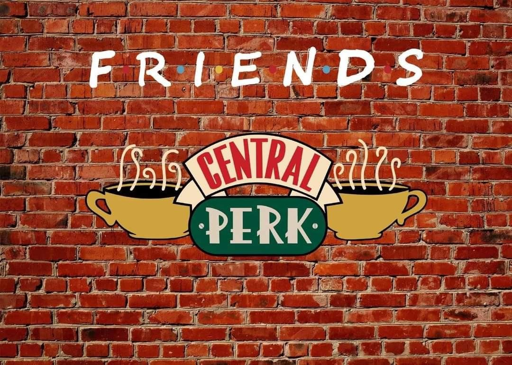
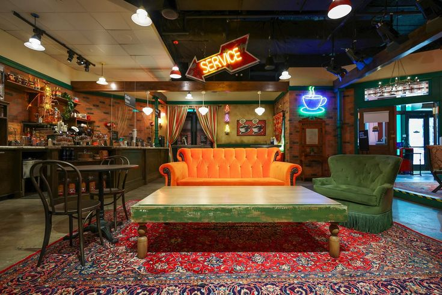
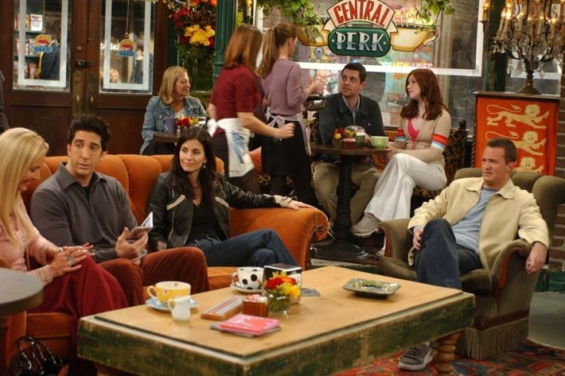

O nome Central Perk é um trocadilho com o famoso Central Park, localizado em Nova York. A palavra "Perk" está relacionada ao café e ao ato de prepará-lo, criando uma brincadeira inteligente que combina perfeitamente com o ambiente da cafeteria. Esse nome ajudou a tornar o local memorável para os espectadores desde os primeiros episódios da série.
O Central Perk é muito mais do que apenas uma cafeteria. Ele funciona como o principal ponto de encontro dos personagens. Sempre que os amigos não estão em seus apartamentos, é muito provável que estejam reunidos ali. O local serve como cenário para conversas importantes, encontros românticos, discussões, comemorações e momentos de humor que marcaram a série.

O sofá laranja localizado no centro da cafeteria é um dos elementos mais icônicos de Friends. Era o lugar onde os seis amigos passavam horas conversando e vivendo momentos importantes. Com o tempo, o sofá se tornou um símbolo da série e da cultura pop.
Na história da série, é mencionado que o espaço onde funciona o Central Perk era anteriormente um bar. Essa informação ajuda a construir um pouco mais do passado do local e mostra como ele se transformou em um dos ambientes mais frequentados pelos personagens.

Nos bastidores do Central Perk, os funcionários trabalham para manter a cafeteria organizada e pronta para receber os clientes. A equipe prepara cafés, lanches e bebidas, além de cuidar da limpeza e do atendimento. Esse trabalho garante um ambiente confortável e acolhedor para todos.
O sucesso de Friends fez com que o Central Perk se tornasse conhecido em todo o mundo. Muitos fãs sonhavam em visitar uma cafeteria igual à da série. Com o passar dos anos, foram criadas exposições, réplicas e cafeterias temáticas inspiradas no local. Até hoje, décadas após a estreia de Friends, o Central Perk continua sendo um dos cenários fictícios mais reconhecidos da cultura pop.
O Central Perk é frequentemente chamado pelos fãs de "o sétimo personagem" de Friends. Isso acontece porque ele está presente em praticamente toda a trajetória dos protagonistas e ajuda a construir a identidade da série. Seu ambiente acolhedor, seus personagens secundários marcantes e as inúmeras cenas memoráveis fizeram com que ele permanecesse vivo na memória do público mesmo muitos anos após o fim de Friends.